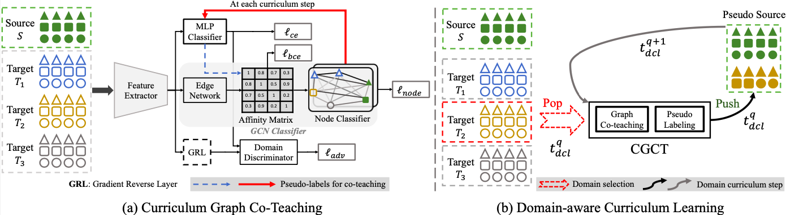
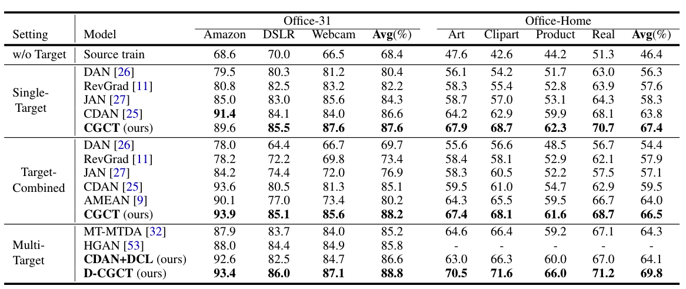

Abstract
In this paper we address multi-target domain adaptation (MTDA), where given one labeled source dataset and multiple unlabeled target datasets that differ in data distributions, the task is to learn a robust predictor for all the target domains. We identify two key aspects that can help to alleviate multiple domain-shifts in the MTDA: feature aggregation and curriculum learning. To this end, we propose Curriculum Graph Co-Teaching (CGCT) that uses a dual classifier head, with one of them being a graph convolutional network (GCN) which aggregates features from similar samples across the domains. To prevent the classifiers from over-fitting on its own noisy pseudo-labels we develop a co-teaching strategy with the dual classifier head that is assisted by curriculum learning to obtain more reliable pseudo-labels. Furthermore, when the domain labels are available, we propose Domain-aware Curriculum Learning (DCL), a sequential adaptation strategy that first adapts on the easier target domains, followed by the harder ones. We experimentally demonstrate the effectiveness of our proposed frameworks on several benchmarks and advance the state-of-the-art in the MTDA by large margins (e.g. +5.6% on the DomainNet).
Overview
In this paper we build our framework for the MTDA pivoted around two key concepts: feature aggregation and curriculum learning.
Firstly, we argue that given the intrinsic nature of the task, learning robust features in a unified space is a prerequisite for attaining minimum risk across multiple target domains. For this purpose we propose to represent the source and the target samples as a graph and then leverage Graph Convolutional Networks (GCN) to aggregate semantic information from similar samples in a neighbourhood across different domains. For the GCN to be operative, partial relationships among the samples (nodes) in the graph must at least be known apriori in the form of class labels. However, this information is absent for the target samples. To this end, we design a co-teaching framework where we train two classifiers: a MLP classifier and a GCN classifier that provide target pseudo-labels to each other. Given that co-teaching works on the assumption that different networks capture different aspects of learning, it is beneficial for suppressing noisy pseudo-labels.
Secondly, we make a crucial observation, very peculiar to the MTDA setting, i.e., during training as the network tries to adapt to multiple domain-shifts of varying degree, pseudo-labels obtained on-the-fly from the network for the target samples are very noisy. Self-training the network with unreliable pseudo-labeled target data further deteriorates the performance. To further combat the impact of noisy pseudo-labels, we propose to obtain pseudo-labels in an episodic fashion, and advocate the use of curriculum learning in the context of MTDA. Specefically, when the domain labels of the target are available, we propose an Easy-To-Hard Domain Selection (EHDS) strategy where the feature alignment process begins with the target domain that is closest to the source and then gradually progresses towards the hardest one. This makes adaptation to multiple targets smoother.
Pipeline

Figure: The pipeline of the proposed framework: a) CGCT: Curriculum Graph Co-Teaching and b) DCL: Domain-aware curriculum learning. (a) In the CGCT, the MLP Classifier provides pseudo-labels (PL) (dashed blue → arrow) for the target samples to guide the Edge Network to learn the Affinity Matrix, whereas the Node Classifier of the GCN provides PL (bold red → arrow) to the MLP Classifier at the end of each curriculum step, realizing the co-teaching. (b) In the DCL, the target domains are selected for adaptation, one at a time per domain curriculum step, with the easier domains selected first and then the harder ones. After PL are obtained, the pseudo-labeled target dataset is added to the Pseudo Source dataset, which is then used in the next adaptation step.
Results
We conducted experiments on several domain adaptation benchmarks: Office31, Office Home, PACS, Digits Five and the challenging Domain Net. We improve the state-of-the-art by non-trivial margins. Some of the results have been reported below. Please refer to the paper for the rest of the experiments.

Citation
If you find our paper and code useful for your research, please consider citing our paper.
@inproceedings{roy2021curriculum,
title={Curriculum Graph Co-Teaching for Multi-target Domain Adaptation},
author={Roy, Subhankar and Krivosheev, Evgeny and Zhong, Zhun and Sebe, Nicu and Ricci, Elisa},
booktitle={Proceedings of the IEEE/CVF Conference on Computer Vision and Pattern Recognition},
year={2021}
}
Contact
You can reach us at the following emails

|
||
|
Subhankar Roy
|
Evgeny Krivosheev
|
Zhun Zhong
|
|
subhankar.roy@unitn.it
|
evgeny.krivosheev@unitn.it
|
zhun.zhong@unitn.it
|

|
|
|
Nicu Sebe
|
Elisa Ricci
|
|
nicu.sebe@unitn.it
|
e.ricci@unitn.it
|